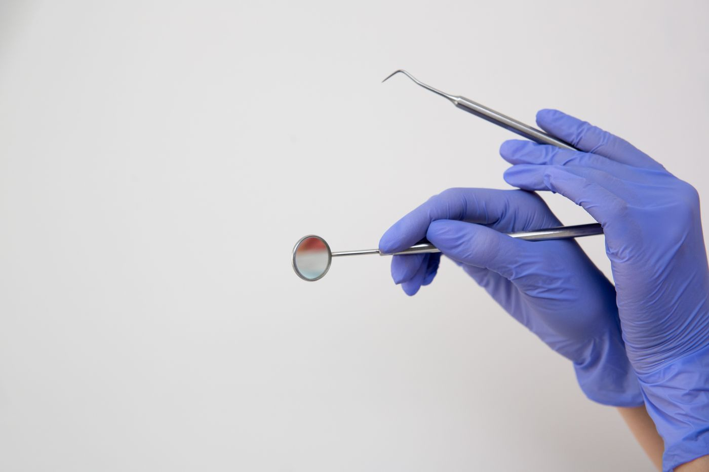

Șos. Mihai Bravu 327 · Sector 3
Douăzeci și unu de ani
în aceeași încăpere.
Cabinetul s-a deschis în iulie 2005 și e la aceeași adresă de atunci. Cinci oameni, un singur cabinet.
Din 13.07.2005 5 oameni Program

TRECEREA 0 · Dent Design Concept · trei direcții, un ecran fiecare, zero animații. Alege o literă. Datele marcate cu ° sunt de confirmat cu cabinetul — nu le-am inventat ca fapte. Fotografiile sunt stoc — cabinetul nu are poze publice.
Șos. Mihai Bravu 327 · Sector 3
Cabinetul s-a deschis în iulie 2005 și e la aceeași adresă de atunci. Cinci oameni, un singur cabinet.
Din 13.07.2005 5 oameni Program

Cabinet stomatologic · Șos. Mihai Bravu 327, Sector 3, București · Dent Design Concept

| 01 | Consultație și plan de tratament | 30 min |
| 02 | Detartraj și periaj profesional | 45 min |
| 03 | Obturații fizionomice | 60 min |
| 04 | Tratament de canal | 90 min |
| 05 | Protetică — coroane și punți | pe etape |
| 06 | Urgențe | în aceeași zi |
Luni–Vineri ora Telefon Șos. Mihai Bravu 327, Bl. 54